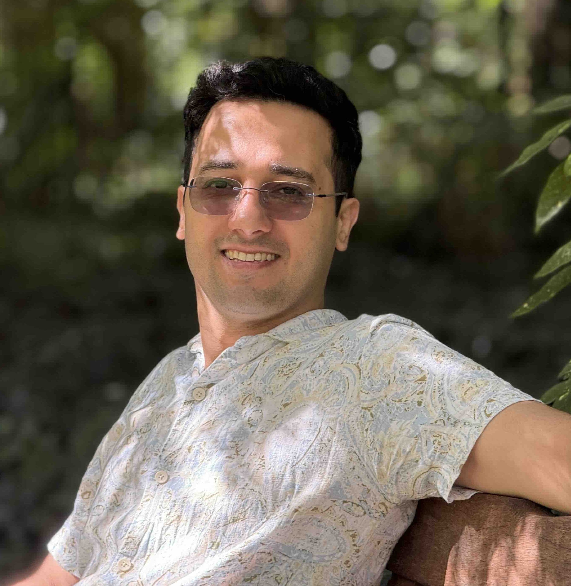
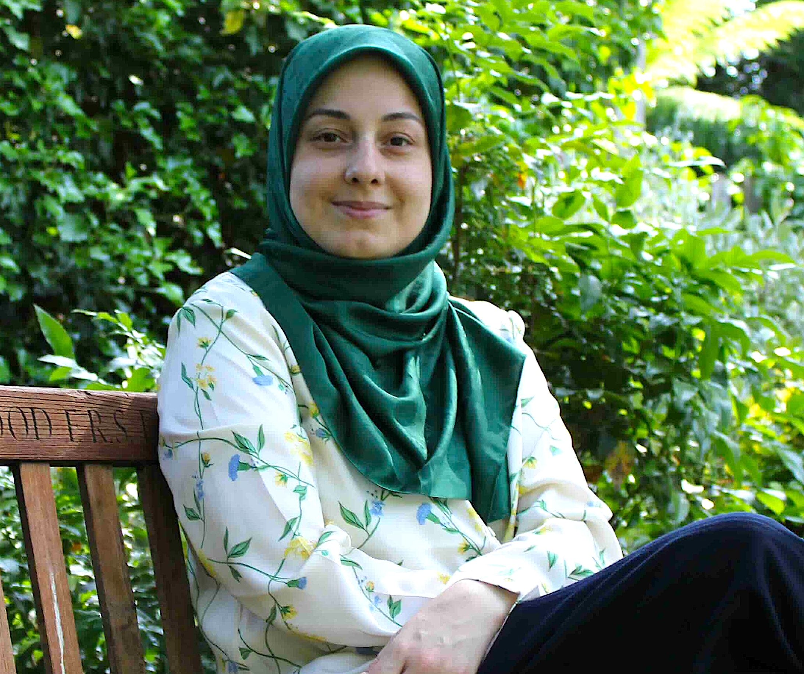
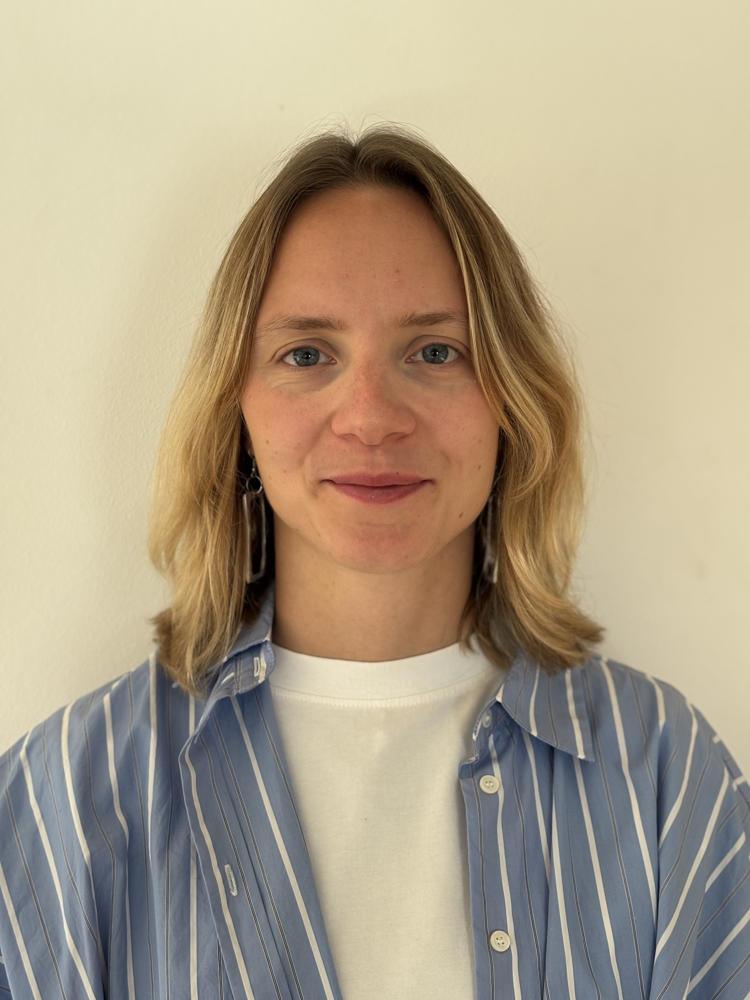
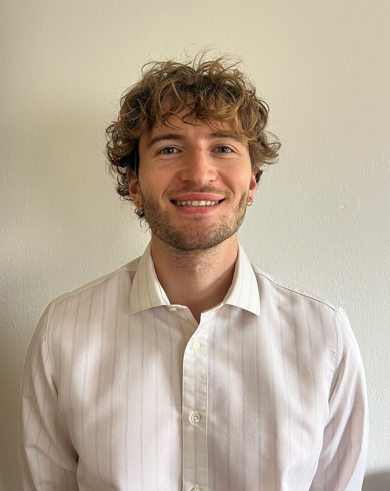

Meet the Team
The Translational Organ Microsystems Research Group is an interdisciplinary research team at the Department of Functional Materials in Medicine and Dentistry (FMZ) and Center of Polymers for Life (CPL), University of Würzburg. We combine expertise in bioengineering, biomaterials, organ-on-chip technologies, mechanobiology, immunology, and translational medicine to develop next-generation human organ microsystems.

Dr. Ali Doryab
Group Leader & Principal InvestigatorDr. Ali Doryab leads the Translational Organ Microsystems Research Group. His research focuses on developing next-generation human organ microsystems that combine organ-on-chip technologies, advanced biofabrication, mechanobiology, and immune engineering to better understand human physiology and disease. The group develops biomimetic and predictive human organ models that bridge the gap between conventional preclinical research and clinical translation, with a particular emphasis on the respiratory system.
Ali received his PhD from Ludwig Maximilian University of Munich (LMU Munich). He subsequently joined the Helmholtz Munich as a postdoctoral researcher and project leader, where he coordinated interdisciplinary research within several national initiatives, including the KLIMA consortium and the BMBF 3R programme for the development of advanced human-relevant lung models. He was then awarded an independent DFG Walter Benjamin Fellowship, enabling him to establish his independent research programme at the University of Cambridge. During this fellowship he worked first within the Department of Engineering before joining the Department of Medicine at Addenbrooke's Hospital, where he further advanced translational lung-on-chip technologies and human disease models. His research has led to the development of several innovative technologies for tissue engineering and organ-on-chip applications. Among these are the BETA membrane, an ultrathin extracellular matrix-inspired membrane for physiologically relevant lung models, and the CIVIC mini-lung platform, a modular bioengineered human lung model for disease modelling and therapeutic testing. These technologies have resulted in patents, industrial translation, and licensing to commercial partners. Ali has received several international recognitions for his research, including the Early Career Award from the International Society for Biofabrication (ISBF, 2023) and the German Center for Lung Research (DZL, 2023). His research is published in leading journals including Advanced Materials, Advanced Functional Materials, and related interdisciplinary journals.
When he finds some free time, Ali enjoys swimming, cooking, and occasionally building something creative (and hopefully useful!). Most of all, he loves spending time with his family, especially his son, whether they are making crafts, building Duplo creations, reading Paddington Bear stories, or watching Ben & Holly's Little Kingdom and Sheriff Labrador together.
- Organ-on-chip and microphysiological systems
- Biofabrication and biomaterials
- Mechanobiology and extracellular matrix remodeling
- Immunocompetent tissue models
- Drug discovery and translational medicine
Google Scholar | ORCID | LinkedIn

Dr. Mota Heydarian
Principal InvestigatorDr. Mota Heydarian is a Principal Investigator at the Department of Functional Materials in Medicine and Dentistry (FMZ), University of Würzburg. She received her PhD from Julius-Maximilians-Universität Würzburg (Germany), specialising in infection and immunity. Mota subsequently held postdoctoral research positions at Helmholtz Munich (Germany) and the Department of Medicine at the University of Cambridge (UK). Her research combines expertise in infection and immunology, tissue engineering, and advanced human in vitro models. She has contributed to the development of immunocompetent lung models to investigate interactions between immune cells, tissue microenvironments, and respiratory pathogens. Her current work focuses on understanding immune responses to respiratory infections and host–pathogen interactions, with the aim of improving our understanding of infection-associated tissue injury and advancing therapeutic strategies. Outside the lab, she enjoys reading, travelling, and spending time with family and friends.
Research Interests
- Mechanobiology
- Host-pathogen interaction
- Immunocompetent In Vitro Models for infection studies
- Infection and immunity
- Neutrophil-ECM interactions
Google Scholar | ORCID | LinkedIn

Anna Haag
PhD StudentAnna holds a Master’s degree in Bio- and Chemical Engineering from TU Braunschweig (Germany), where she specialised in bioengineering with a particular focus on in vitro cell culture models. During her studies, she worked as a research assistant at the Institute of Microtechnology, focusing on microfluidic platforms for the characterisation of cell barrier models. Her experience reflects a strong interdisciplinary interest in bridging biology and engineering to develop advanced in vitro systems. Her PhD research focuses on developing next-generation lung-on-chip platforms with integrated real-time monitoring of tissue barrier integrity and function, enabling dynamic assessment of cellular responses under physiologically relevant conditions.
Email: anne.haag@stud-mail.uni-wuerzburg.de Google Scholar | ORCID | LinkedIn

Emiliano Fallilone
PhD StudentEmiliano holds Bachelor's and Master's degrees in Biotechnology from the University of Trieste (Italy), including an extensive research traineeship at UIC Barcelona focused on 3D coaxial bioprinting of tissue-engineered blood vessels. His PhD research focuses on in-gel 3D bioprinting of functional and adaptive vascular tissue constructs, with particular emphasis on engineering vascularised tissue interfaces, including the alveolar–capillary barrier, and integrating these constructs into advanced human in vitro lung models. Outside the lab, Emiliano can often be found on the basketball court.
Email:
Emiliano.fallilone@stud-mail.uni-wuerzburg.de
Google Scholar |
ORCID |
LinkedIn
Our Team is Growing
The Translational Organ Microsystems Research Group continues to grow at the University of Würzburg. We bring together researchers with expertise in bioengineering, biomaterials, microphysiological systems, cell biology, immunology, and translational medicine.
We welcome expressions of interest from motivated undergraduate and graduate students, doctoral researchers, postdoctoral fellows, and visiting scientists interested in developing next-generation human organ models.
Although there may not always be funded positions available, we encourage interested candidates to visit our Positions page. We also support outstanding candidates in applying for external fellowships and funding programmes.
If your research interests align with our work, we would be delighted to hear from you.